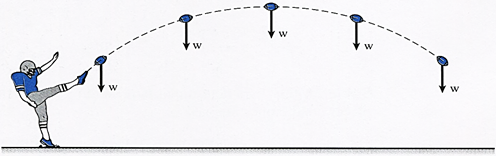
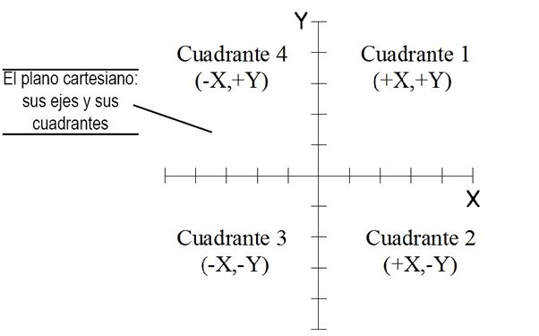
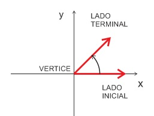
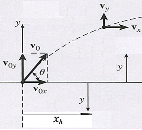
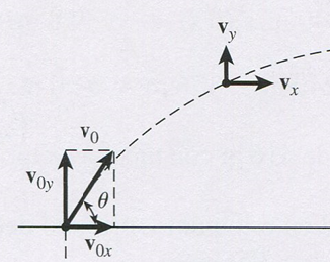
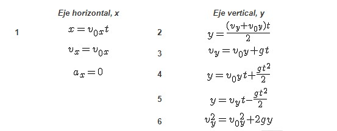

1. Tiro Parabólico, ¿Qué es?
El movimiento de proyectiles es una combinación simultánea de dos tipos de movimiento, los cuales ocurren en un solo eje: el movimiento rectilíneo uniforme, que se lleva a cabo en el eje horizontal, el eje x, y el tiro vertical, que se realiza en el eje y. Un proyectil lanzado con un ángulo ϴ mayor de 0° y menor de 90°, tendrá siempre una componente vertical de su velocidad inicial mediante la cual asciende y desciende bajo la acción de la gravedad, en el eje y, mientras que en la dirección horizontal, el eje x, se mueve a velocidad constante (ax = 0), alejándose del punto de lanzamiento. La trayectoria que describe un proyectil que es lanzado en las condiciones anteriores, es una parábola, como se muestra en la figura, por lo cual también es llamado tiro parabólico.

El Movimiento de proyectiles o Tiro parabólico es el caso más general de un cuerpo que se lanza libremente, en una dirección no vertical, con un cierto ángulo agudo positivo, dentro de un campo gravitacional como el de nuestro planeta. Un ejemplo cotidiano, podría ser el lanzamiento de un balón de futbol americano.
Un idea clave es ubicar la posición de inicio del movimiento, punto de lanzamiento del objeto, en el origen de un plano cartesiano “x-y”, mostrado abajo. El eje “x” es positivo a la derecha del origen y negativo a la izquierda; el eje “y” es positivo hacia arriba del origen, negativo hacia abajo. Básicamente utilizaremos los cuadrantes I y IV.

El ángulo de lanzamiento, ϴ, como un ángulo en posición normal, se mide a partir del eje positivo x, en el sentido contrario de las manecillas del reloj.

Las variables utilizadas para expresar la posición del proyectil en cualquier momento se explican en el audio que acompaña a la siguiente figura.

Y son las siguientes:
1. Los valores de "x" indican el desplazamiento horizontal a partir del origen, en m.
2. Los valores de "y" representan el desplazamiento vertical a partir del origen, en m.
Las variables que definen la velocidad inicial y sus componentes, así como las componentes de la velocidad en cualquier momento se explican en el audio y se muestran en la figura.

Fórmulas a tener en cuenta:
